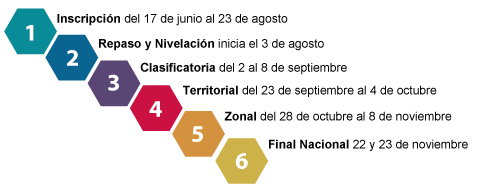

Supérate con el Saber
Es un programa nacional de competencias académicas, deportivas y de jornadas escolares complementarias dirigido a niños, niñas y adolescentes de 7 a 18 años el cual es liderado por el Ministerio de Educación y Coldeportes. Las actividades en torno a las competencias en las disciplinas académicas "Supérate con el Saber" son llevadas a cabo con el liderazgo del Ministerio de Educación Nacional, con el fin de divulgar los Estándares Básicos de Competencias, así como también de mejorar la comprensión de la evaluación externa, y acercar a los estudiantes a los formatos utilizados por las pruebas SABER.
Fases
Las actividades en Supérate con el Saber, se realizan mediante una plataforma virtual en la que se promueve el uso de las nuevas tecnologías de información y comunicación, es de anotar, que la idea es que mediante la utilización de la plataforma se complemente el trabajo dado en el aula, esto mediante la utilización de los contenidos de repaso y los ítems de los que podría disponer tanto el estudiante como su docente acompañante. Supérate con el saber está apoyado en un plan de incentivos que incluye a estudiantes, docentes e instituciones educativas, y que contribuye al mejoramiento de la calidad de vida y a la generación de oportunidades para el desarrollo social en todos los municipios de Colombia. Podrá encontrar más información e inscribirse en www.superate.gov.co